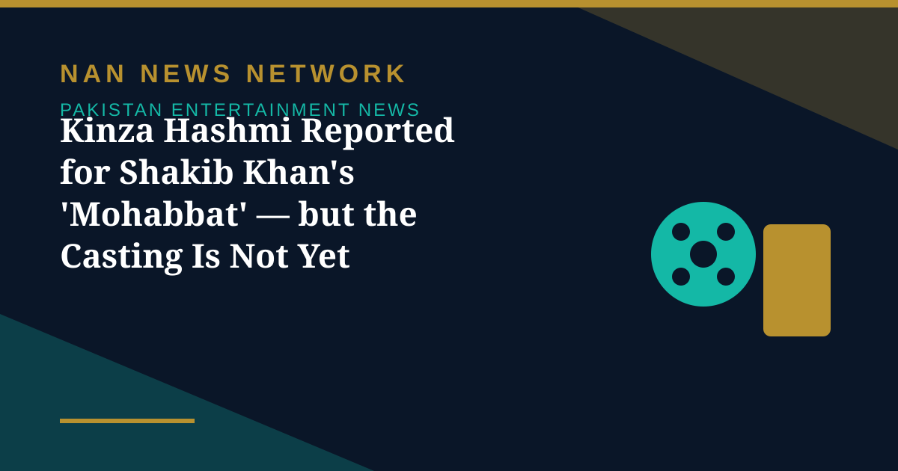

Kinza Hashmi Reported for Shakib Khan's 'Mohabbat' — but the Casting Is Not Yet Confirmed

Pakistani actress and model Kinza Hashmi is reportedly set to make her Bangladeshi film debut opposite Shakib Khan in his upcoming film ‘Mohabbat’, according to sources close to the production cited by TOB News on November 4 — a report, not a confirmed announcement.
What is reported — and what is not
Several sources close to the production have indicated that Kinza has been selected for the female lead and that the formalities of her contract have been completed, TOB News reported. However, director Himel Ashraf and producer Arshad Adnan have yet to confirm the casting publicly, and the production company, Versatile Media, is reportedly planning to introduce Shakib's new co-star at a special event. Shooting is reportedly set to begin in the first week of January 2027, aiming for an Eid-ul-Azha 2027 release.
Kinza's career so far
Kinza began acting in 2014 and gained recognition through television dramas including Ishq Tamasha, in which she played Rushna, as well as Gul-o-Gulzar, Mohlat, Dil Awaiz, Hook and Mere Ban Jao, plus the telefilm Rooposh. She has also worked in films including Kattar Karachi and Shiroz. Until Versatile Media confirms the casting, the ‘Mohabbat’ role should be treated as reported rather than settled.
Sources: TOB News, EIN Presswire, November 4, 2026
More on Pakistan Entertainment News
- Children's Theatre Takes Centre Stage on Day Six of World Culture Festival Karachi
- Pakistan and Saudi Arabia Agree to Expand TV, Entertainment and Digital Media Ties
- World Culture Festival Karachi Screens 'Wakhri' on Its Fourth Day of Theatre, Film and Music
- PTV to Revive Drama and Film Academy With Pakistan's First Local Colour Grading Training
- Ali Zafar's Bostan Khan Look for 'Gangs of Khorasan' Leaves Fans Curious
- 'Hum Bhi Jee Lain' Takes On Parental Expectations Pushing Children Into Unwanted Careers
- Sheheryar Munawar Announces New 'Dar-e-Nijaat' OST After Fans Kept Asking for It
- 'Ghost School' Opens in Pakistani Cinemas After a Long Censor Battle in Sindh
- Faysal Quraishi and Hareem Farooq Decry Alleged 'Smear Campaign' Against 'Mango Jutt'
- World Culture Festival 2026 Opens in Karachi With 150 Countries Taking Part
- Punjab Plans Stricter Laws for Theatre and Stage Dramas, Replacing 1876 Act
- Faran Tahir Returns to Marvel as Raza in Vision Quest After 18 Years
- Ramayana Buzz Reaches Karachi as Fans Display Film Poster at Temple
- Humayun Saeed Calls for Pakistan's Own OTT Platform to Take Dramas Global
- Dananeer Mubeen Teases 'Bullet Speed' Twists Ahead in 'Hurmat'
- 'Ghost School' Opens in Pakistan Cinemas on October 30 After Censor Court Fight
- Pakistani Dramas to Watch in October 2026: 'Mitti De Baway' Leads the Month
- Pakistani Film 'Wakhri' Selected for UK's South Asian Film Season
- World Theatre Comes to Lahore as Punjab MAAS Festival Runs to October 28
- 'Mango Jutt' Punjabi Action-Comedy Hits Cinemas
- Dar-e-Nijaat Tops 2026 TV Ratings at 16.3 TRP
- Ali Zafar to Make His Pakistani TV Drama Debut in a New Crime Series